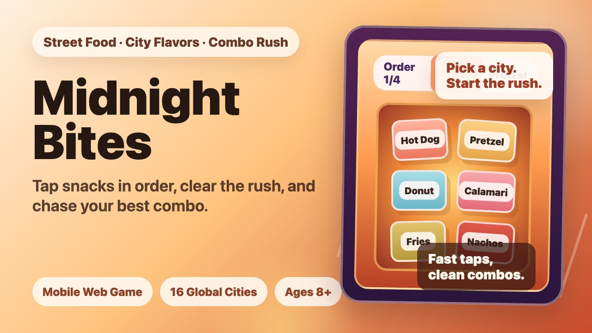

Restaurant Games
Free Online Restaurant Games
Restaurant games are about reading orders, reacting quickly, and keeping the food-service rush under control. Bitesize Arcade focuses on free online restaurant games that open fast, play well on mobile, and do not require downloads.

Play Now
Midnight Bites
Tap food orders in sequence, serve street-food snacks, and build a higher combo score in a quick browser restaurant game.
What Makes a Good Restaurant Game?
A strong restaurant game gives players clear orders, readable food items, and a steady rhythm of pressure. The fun comes from serving accurately while the pace keeps rising, whether the challenge is a snack counter, a food truck, or a busy late-night stall.
Play Restaurant Games in Your Browser
Browser restaurant games are best when they start quickly and make every action easy to understand. Midnight Bites keeps the loop simple: read the order, tap the matching snacks, finish the rush, and try for a better combo.
Featured Restaurant Game: Midnight Bites
Midnight Bites is the first featured restaurant game on Bitesize Arcade. It mixes food-order timing, street-food themes, snack games energy, and short arcade sessions built for phones and desktop browsers.
Related Game Types
If you enjoy restaurant games, you may also like food games, snack games, and time management games because they share the same focus on fast choices, order priority, and repeatable score goals.
Restaurant Games Guide
Serve Orders, Snacks, and Combos
The best restaurant games make the next action obvious: read the order, choose the right food, and keep the rush moving. Midnight Bites follows that formula with a snack-order loop that works well on phones. Instead of complex menus or long tutorials, each round asks you to recognize the requested snacks, tap them in order, and protect your combo.
This makes the game a natural fit for players searching for free online restaurant games, food games, snack games, and light time management games. The pressure comes from rhythm and accuracy rather than from idle upgrades or heavy cooking simulation. You can start a run quickly, finish a short session, and retry for a cleaner score.
As Bitesize Arcade grows, this category will stay focused on browser-friendly restaurant games with clear food-service actions: order reading, fast serving, simple controls, and replayable scoring goals.
FAQ
Restaurant Games Questions
What are restaurant games?
Restaurant games are games about reading orders, serving food, managing a rush, and keeping customers or score goals on track.
Can I play restaurant games online for free?
Yes. Bitesize Arcade offers free online restaurant games that run in a browser, starting with Midnight Bites.
Is Midnight Bites a restaurant game?
Yes. Midnight Bites is a restaurant game where players tap snack orders in sequence, serve street-food items, and build combo scores.